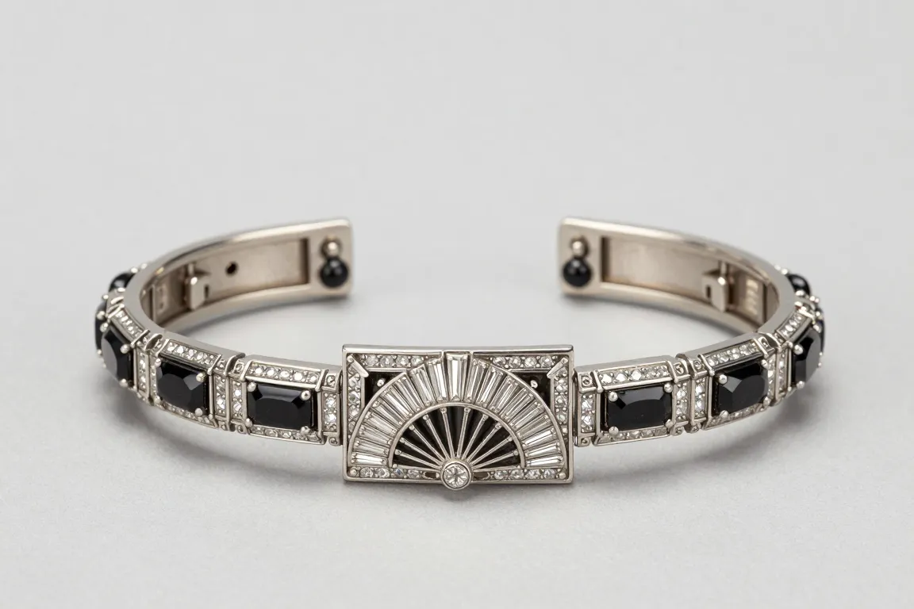

Твёрдая яркая геометрия в платине. Камни — бриллианты багетной и квадратной огранки, чёрный оникс, горный хрусталь и резные цветные камни — собраны в полосы, веера и солнечные лучи. Показаны в Париже в 1925 году.

Главная идея
Украшение — дизайн века машин: твёрдый плоский узор из линии, угла и контраста в белом металле и камнях.
Принципы дизайна
Стройте форму из прямых линий, кругов и углов в симметричном узоре.
Противопоставляйте белое и чёрное: бриллианты и платина рядом с чёрным ониксом или чёрной эмалью.
Режьте камни острыми формами: багет, квадрат, треугольник и калибровка, и сажайте плоско рядами.
Берите платину или белое золото для оправы, скрывайте крапаны и держите линии тонкими, как нить.
Добавляйте один сильный цвет в резном камне: изумруд, рубин или сапфир, вырезанный листом, плодом или цветком (стиль «тутти-фрутти»).
Берите формы у машины, Египта, Индии и кубизма: веер, солнечные лучи, ступенчатый силуэт города.
Делайте вещь полосой, клипсой или подвижным браслетом с плоским фасадом и шарниром.
Закрепляйте камни без видимого металла, «невидимой» закрепкой, чтобы камни выглядели одной поверхностью.